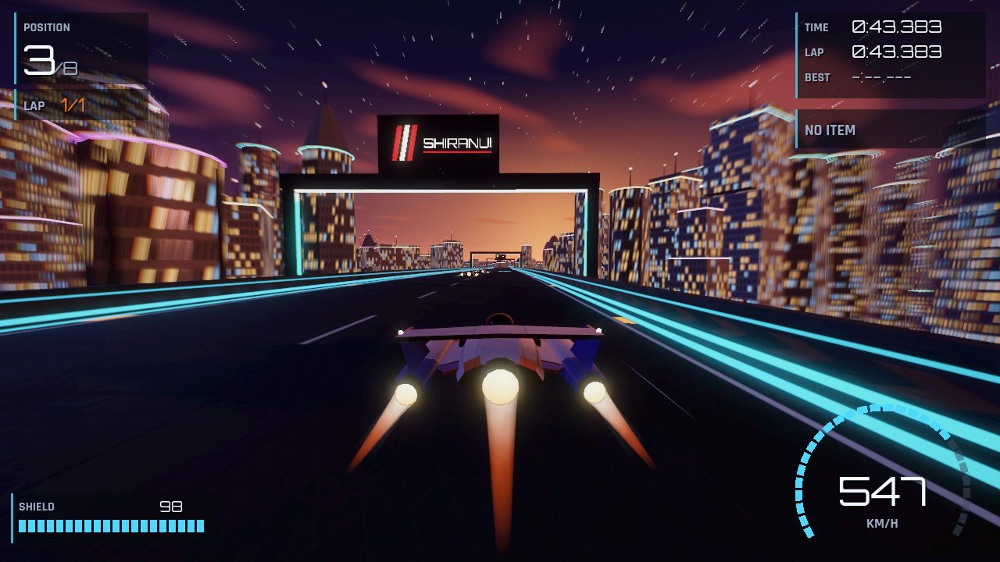

Velocity
An original anti-gravity racer. Eight teams fly hovering ships at over 900 km/h across five circuits — a dusk megacity, an Arctic station, a desert spaceport, a station in orbit and a rainforest gorge — braking on airbrakes and fighting for places with eight weapons and power-ups.
Un jeu de course anti-gravité original. Huit écuries pilotent des vaisseaux en sustentation à plus de 900 km/h sur cinq circuits — une mégapole au crépuscule, une station arctique, une base spatiale dans le désert, une station en orbite et une gorge en pleine forêt tropicale —, en freinant aux aérofreins et en se disputant les places avec huit armes et bonus.
ហ្គេមប្រណាំងប្រឆាំងទំនាញ ដែលជាស្នាដៃដើម។ ក្រុមចំនួន 8 បើកយានអណ្តែតក្នុងល្បឿនជាង 900 km/h លើផ្លូវប្រណាំង 5 — ទីក្រុងធំពេលព្រលប់ ស្ថានីយនៅតំបន់អាក់ទិក កំពង់ផែអវកាសនៅវាលខ្សាច់ ស្ថានីយក្នុងគន្លងគោចរ និងជ្រលងភ្នំក្នុងព្រៃត្រូពិច — ដោយហ្វ្រាំងជាមួយ airbrakes និងដណ្តើមចំណាត់ថ្នាក់ជាមួយអាវុធ និងជំនួយ 8 ប្រភេទ។

A metre above the track, at 900 km/h.
The year is 2189. In the Anti-Gravity League, eight teams race ships that hover a metre above a conductive deck. A flux lock holds each ship to the surface, so it can climb banked spirals, run over crests and even ride a deck that rolls a full turn. There are no wheels and no brake pedal: you steer with the nose and slow down with two independent airbrakes — one alone tightens the line, both together brake.
Weapon pads on the track hand out one of eight items: plasma bolts, a seeker missile, an EMP pulse, a shockwave, an energy shield, a mine barrier, a turbo and a repair. Hits and wall contacts drain the shield — lose it all and you are out of the race. The recharge strip on the start straight tops it up once per lap, and boost pads reward the right line.
Five worlds, one racing surface.
| Circuit | World | Signature |
|---|---|---|
| Helix Bay | A dusk megacity on a bay · 6.5 km | A 450° banked spiral round a 320 m spire, a jump over a canal, a tunnel under the harbour |
| Glacier Ring | An Arctic research station under the aurora · 6.3 km | Hairpins up a glacier, a tunnel through blue ice, a 70 m jump over a crevasse |
| Atacama Spaceport | A desert launch complex in full daylight · 6.8 km | A loop round a 120 m rocket, a jump over the flame trench, the assembly hall |
| Lagrange Station | A racing station in low orbit · 6.3 km | A corkscrew in which the deck rolls a full 360°, a spiral round the station core, a habitat with garden terraces |
| Serra Verde | A rainforest gorge in the rain · 6.8 km figure-eight | A start on a dam, a 1.26 km cable-stayed bridge, a grotto behind a waterfall |
Each world has its own light and weather, but the track, barriers and markings look the same everywhere, so the racing surface always reads the same way. A Proving Ground — straight, sweeper, hairpin, S-bends, crest and jump — is there to practise with telemetry. Five circuits are finished; seven more are planned.
Six ways to race.
| Mode | Rule |
|---|---|
| Single Race | Eight ships; the first across the line wins. |
| Elimination | The last ship is knocked out every 35 seconds. |
| Combat | Points for every hit and every knockout. |
| Speed Challenge | Bronze, silver and gold medals, with times set from the circuit’s ideal lap. |
| Time Trial | Alone against the clock and your own records. |
| Practice | Free laps with no opponents. |
The career follows four speed classes — Spark, Arc, Nova and Quasar, from about 520 to over 930 km/h — across 29 events, each with an objective and a credit reward; a tier opens once enough events of the one before are done. Six championship cups of three or four rounds mix the formats, with a points table and standings saved between rounds. Credits unlock teams and faster classes.
Built for speed.
Handling first
Ships run on their own deterministic simulation at 120 Hz, not on a generic physics engine. Steering is limited by grip, so cornering force grows with the input and full lock gives a small, controllable drift. Banks and slopes pull on the ship, and in the air it keeps only part of its steering.
Eight teams, eight ships
Every team flies its own silhouette — nose, pods, fins, canards and engines are generated from parameters — with its own livery, logo and pilot, and its own ratings for speed, thrust, handling, stability, shield and airbrakes. All ships share the same collision size, so no shape has an unfair edge.
Rivals that race clean
The AI follows a racing line with a speed profile, overtakes, blocks and uses its items. Five driving personalities and three difficulties (Rookie, Pro, Elite) — and no rubber-banding: nobody is slowed down or pushed along to keep the pack together.
Speed you can feel
The field of view widens with speed, streaks and edge blur appear, and in tunnels light bars sweep over the hull. Three chase cameras, a cockpit with live displays, and a trackside camera at the finish.
How to fly.
| Action | Touch | Keyboard | Gamepad |
|---|---|---|---|
| Steer | Tilt the phone, ◀ ▶ buttons or a floating slider | ← → / A D | Left stick |
| Thrust | Automatic (optional thrust pad) | ↑ / W | A |
| Left / right airbrake | L / R buttons under the thumbs | Q / E | LT / RT (analogue), LB / RB |
| Brake | Both airbrakes together | ↓ / S | B |
| Fire | Fire button | Space | X |
| Change camera | CAM button | V / Tab | Y |
| Pause | Pause button | Esc / P | Start |
A steering assist (Off, Low, High) adds the steering a corner needs while you are not steering, and nudges you away from a barrier; it fades out as soon as you steer. Tilt can be calibrated, and the opacity and size of the touch controls are set in Settings.
À un mètre de la piste, à 900 km/h.
Nous sommes en 2189. Dans l’Anti-Gravity League, huit écuries font courir des vaisseaux qui flottent à un mètre au-dessus d’une piste conductrice. Un verrou de flux plaque chaque vaisseau contre la surface : il peut grimper des spirales relevées, passer des crêtes et même suivre une piste qui fait un tour complet sur elle-même. Pas de roues ni de pédale de frein : on dirige avec le nez du vaisseau et on ralentit avec deux aérofreins indépendants — un seul resserre la trajectoire, les deux ensemble freinent.
Les plots d’armes de la piste distribuent l’un des huit objets : salves de plasma, missile à tête chercheuse, impulsion EMP, onde de choc, bouclier d’énergie, barrage de mines, turbo et réparation. Les tirs encaissés et les contacts avec les murs vident le bouclier — à zéro, c’est l’abandon. La bande de recharge de la ligne droite de départ le remplit une fois par tour, et les plots d’accélération récompensent la bonne trajectoire.
Cinq mondes, une même piste.
| Circuit | Univers | Signature |
|---|---|---|
| Helix Bay | Une mégapole au crépuscule au bord d’une baie · 6,5 km | Une spirale relevée de 450° autour d’une tour de 320 m, un saut au-dessus d’un canal, un tunnel sous le port |
| Glacier Ring | Une station de recherche arctique sous les aurores · 6,3 km | Des épingles sur un glacier, un tunnel dans la glace bleue, un saut de 70 m au-dessus d’une crevasse |
| Atacama Spaceport | Une base de lancement dans le désert, en plein jour · 6,8 km | Une boucle autour d’une fusée de 120 m, un saut au-dessus de la tranchée des flammes, le hall d’assemblage |
| Lagrange Station | Une station de course en orbite basse · 6,3 km | Un tire-bouchon où la piste fait un tour complet de 360°, une spirale autour du cœur de la station, un habitat aux terrasses-jardins |
| Serra Verde | Une gorge en forêt tropicale sous la pluie · 6,8 km en huit | Un départ sur un barrage, un pont à haubans de 1,26 km, une grotte derrière une cascade |
Chaque monde a sa lumière et sa météo, mais la piste, les barrières et les marquages sont les mêmes partout : la surface de course se lit toujours de la même façon. Un Proving Ground — ligne droite, grande courbe, épingle, chicanes, crête et saut — sert à s’entraîner avec la télémétrie. Cinq circuits sont terminés ; sept autres sont prévus.
Six façons de courir.
| Mode | Règle |
|---|---|
| Course simple | Huit vaisseaux ; le premier à franchir la ligne gagne. |
| Élimination | Le dernier vaisseau est éliminé toutes les 35 secondes. |
| Combat | Des points pour chaque tir réussi et chaque élimination. |
| Défi de vitesse | Médailles de bronze, d’argent et d’or, avec des temps fixés d’après le tour idéal du circuit. |
| Contre-la-montre | Seul face au chrono et à vos propres records. |
| Entraînement | Des tours libres, sans adversaires. |
La carrière suit quatre classes de vitesse — Spark, Arc, Nova et Quasar, d’environ 520 à plus de 930 km/h — à travers 29 épreuves, chacune avec un objectif et une récompense en crédits ; un palier s’ouvre quand assez d’épreuves du précédent sont réussies. Six coupes de championnat de trois ou quatre manches mélangent les formats, avec un barème de points et un classement sauvegardé entre les manches. Les crédits débloquent des écuries et des classes plus rapides.
Taillé pour la vitesse.
Le pilotage d’abord
Les vaisseaux reposent sur leur propre simulation déterministe à 120 Hz, pas sur un moteur physique générique. La direction est limitée par l’adhérence : la force en virage suit l’action du joueur, et le braquage maximal donne une légère dérive, facile à contrôler. Dévers et pentes tirent sur le vaisseau, et en l’air il ne garde qu’une partie de sa direction.
Huit écuries, huit vaisseaux
Chaque écurie pilote sa propre silhouette — nez, nacelles, ailerons, canards et moteurs sont générés à partir de paramètres — avec sa livrée, son logo, son pilote et ses propres notes de vitesse, poussée, maniabilité, stabilité, bouclier et aérofreins. Tous les vaisseaux ont la même taille de collision : aucune forme n’offre d’avantage injuste.
Des rivaux qui courent proprement
L’IA suit une trajectoire de course avec un profil de vitesse, dépasse, bloque et utilise ses objets. Cinq personnalités de pilotage et trois niveaux de difficulté (Rookie, Pro, Elite) — et pas d’effet élastique : personne n’est ralenti ni poussé pour garder le peloton groupé.
Une vitesse qui se ressent
Le champ de vision s’élargit avec la vitesse, des traînées et un flou en bord d’écran apparaissent, et dans les tunnels des barres de lumière balaient la coque. Trois caméras de poursuite, un cockpit aux écrans animés et une caméra en bord de piste à l’arrivée.
Comment piloter.
| Action | Tactile | Clavier | Manette |
|---|---|---|---|
| Diriger | Inclinaison du téléphone, boutons ◀ ▶ ou curseur flottant | ← → / A D | Stick gauche |
| Poussée | Automatique (bouton de poussée en option) | ↑ / W | A |
| Aérofrein gauche / droit | Boutons L / R sous les pouces | Q / E | LT / RT (analogiques), LB / RB |
| Freiner | Les deux aérofreins ensemble | ↓ / S | B |
| Tirer | Bouton de tir | Espace | X |
| Changer de caméra | Bouton CAM | V / Tab | Y |
| Pause | Bouton pause | Échap / P | Start |
L’aide à la direction (désactivée, faible, forte) ajoute le braquage qu’exige le virage tant que le joueur ne dirige pas, et l’écarte d’une barrière toute proche ; elle s’efface dès qu’il reprend la main. L’inclinaison se calibre, et l’opacité et la taille des commandes tactiles se règlent dans les paramètres.
ខ្ពស់ពីផ្លូវមួយម៉ែត្រ ក្នុងល្បឿន 900 km/h។
ឆ្នាំ 2189។ នៅក្នុង Anti-Gravity League ក្រុមចំនួន 8 ប្រណាំងយានដែលអណ្តែតខ្ពស់មួយម៉ែត្រពីលើផ្ទៃផ្លូវដែលចម្លងថាមពល។ ប្រព័ន្ធ flux lock រក្សាយាននីមួយៗឱ្យជាប់នឹងផ្ទៃផ្លូវ ដូច្នេះវាអាចឡើងតាមផ្លូវវង់ដែលផ្អៀង ឆ្លងកាត់កំពូលទួល និងសូម្បីតែបើកលើផ្ទៃផ្លូវដែលវិលមួយជុំពេញ។ គ្មានកង់ និងគ្មានឈ្នាន់ហ្វ្រាំងទេ៖ អ្នកបត់ទិសដោយក្បាលយាន ហើយបន្ថយល្បឿនដោយ airbrakes ពីរដែលដំណើរការដាច់ដោយឡែកពីគ្នា — airbrake តែមួយធ្វើឱ្យខ្សែផ្លូវបត់កាន់តែតឹង ហើយទាំងពីរព្រមគ្នាគឺជាការហ្វ្រាំង។
បន្ទះអាវុធនៅលើផ្លូវ ផ្តល់វត្ថុមួយក្នុងចំណោម 8 ប្រភេទ៖ គ្រាប់ plasma មីស៊ីលតាមដានគោលដៅ EMP រលកឆក់ ខែលថាមពល របាំងមីន turbo និងការជួសជុល។ ការត្រូវគ្រាប់ និងការបុកជញ្ជាំង កាត់បន្ថយខែល — បើអស់ខែល អ្នកត្រូវចេញពីការប្រណាំង។ ផ្លូវបញ្ចូលថាមពលនៅលើផ្លូវត្រង់ចាប់ផ្តើម បំពេញខែលវិញម្តងក្នុងមួយជុំ ហើយបន្ទះបង្កើនល្បឿនផ្តល់រង្វាន់ដល់អ្នកដែលជ្រើសខ្សែផ្លូវត្រឹមត្រូវ។
ពិភព 5 ផ្ទៃផ្លូវប្រណាំងតែមួយ។
| ផ្លូវប្រណាំង | ពិភព | ចំណុចពិសេស |
|---|---|---|
| Helix Bay | ទីក្រុងធំនៅមាត់ឈូងសមុទ្រ ពេលព្រលប់ · 6.5 km | ផ្លូវវង់ផ្អៀង 450° ជុំវិញអគារ Spire កម្ពស់ 320 m ការលោតឆ្លងប្រឡាយ និងផ្លូវរូងក្រោមកំពង់ផែ |
| Glacier Ring | ស្ថានីយស្រាវជ្រាវនៅតំបន់អាក់ទិក ក្រោមពន្លឺ aurora · 6.3 km | ផ្លូវបត់កែងឡើងលើផ្ទាំងទឹកកក ផ្លូវរូងកាត់ទឹកកកពណ៌ខៀវ និងការលោត 70 m ឆ្លងប្រហោងទឹកកក |
| Atacama Spaceport | កំពង់ផែអវកាសនៅវាលខ្សាច់ ពេលថ្ងៃភ្លឺច្បាស់ · 6.8 km | ផ្លូវជុំវិញរ៉ុក្កែតកម្ពស់ 120 m ការលោតឆ្លងប្រឡាយអណ្តាតភ្លើង និងរោងដំឡើងរ៉ុក្កែត |
| Lagrange Station | ស្ថានីយប្រណាំងក្នុងគន្លងគោចរទាប · 6.3 km | Corkscrew ដែលផ្ទៃផ្លូវវិលមួយជុំពេញ 360° ផ្លូវវង់ជុំវិញស្នូលស្ថានីយ និងបំពង់លំនៅដ្ឋានដែលមានសួនច្បារ |
| Serra Verde | ជ្រលងភ្នំក្នុងព្រៃត្រូពិច ក្រោមភ្លៀង · 6.8 km រាងលេខ 8 | ចាប់ផ្តើមលើទំនប់ ស្ពានខ្សែកាបប្រវែង 1.26 km និងរូងភ្នំនៅពីក្រោយទឹកធ្លាក់ |
ពិភពនីមួយៗមានពន្លឺ និងអាកាសធាតុផ្ទាល់ខ្លួន ប៉ុន្តែផ្លូវ របាំង និងសញ្ញាសម្គាល់ មើលទៅដូចគ្នានៅគ្រប់ទីកន្លែង ដូច្នេះផ្ទៃផ្លូវប្រណាំងតែងតែងាយមើលដូចគ្នា។ Proving Ground — ផ្លូវត្រង់ ផ្លូវបត់វែង ផ្លូវបត់កែង S-bends កំពូលទួល និងការលោត — មានសម្រាប់ហ្វឹកហាត់ជាមួយ telemetry។ ផ្លូវប្រណាំង 5 បានបញ្ចប់ហើយ ហើយ 7 ទៀតកំពុងគ្រោងទុក។
របៀបប្រណាំង 6 យ៉ាង។
| របៀប | ច្បាប់ |
|---|---|
| ការប្រណាំងធម្មតា (Single Race) | យាន 8 គ្រឿង អ្នកដែលឆ្លងខ្សែបញ្ចប់មុនគេជាអ្នកឈ្នះ។ |
| ការកម្ចាត់ចេញ (Elimination) | យានដែលនៅចុងក្រោយគេ ត្រូវដកចេញរៀងរាល់ 35 វិនាទី។ |
| ការប្រយុទ្ធ (Combat) | ពិន្ទុសម្រាប់ការបាញ់ត្រូវ និងការកម្ចាត់គូប្រកួតនីមួយៗ។ |
| ការប្រជែងល្បឿន (Speed Challenge) | មេដាយសំរិទ្ធ ប្រាក់ និងមាស តាមពេលវេលាដែលកំណត់ពីជុំល្អបំផុតតាមទ្រឹស្តីនៃផ្លូវប្រណាំង។ |
| ការប្រណាំងនឹងពេលវេលា (Time Trial) | ម្នាក់ឯងប្រជែងនឹងនាឡិកា និងកំណត់ត្រារបស់អ្នកផ្ទាល់។ |
| ការហ្វឹកហាត់ (Practice) | ជុំសេរីគ្មានគូប្រកួត។ |
អាជីពដើរតាមថ្នាក់ល្បឿន 4 — Spark, Arc, Nova និង Quasar ចាប់ពីប្រហែល 520 រហូតដល់ជាង 930 km/h — ក្នុងការប្រកួត 29 ដែលនីមួយៗមានគោលដៅ និងរង្វាន់ជាក្រេឌីត។ កម្រិតបន្ទាប់បើក នៅពេលបញ្ចប់ការប្រកួតគ្រប់ចំនួននៃកម្រិតមុន។ ពានរង្វាន់ជើងឯក 6 ដែលមាន 3 ឬ 4 វគ្គ លាយបញ្ចូលរបៀបប្រណាំងផ្សេងៗ ជាមួយតារាងពិន្ទុ និងចំណាត់ថ្នាក់ដែលរក្សាទុករវាងវគ្គនីមួយៗ។ ក្រេឌីតដោះសោក្រុម និងថ្នាក់ល្បឿនដែលលឿនជាងមុន។
បង្កើតឡើងសម្រាប់ល្បឿន។
ការបើកបរមកមុនគេ
យានដំណើរការលើការក្លែងធ្វើផ្ទាល់ខ្លួន ដែលផ្តល់លទ្ធផលដូចគ្នាជានិច្ច (deterministic) នៅ 120 Hz មិនមែនលើម៉ាស៊ីនរូបវិទ្យាទូទៅទេ។ ការបត់ចង្កូតត្រូវបានកំណត់ដោយការចាប់ផ្លូវ ដូច្នេះកម្លាំងពេលបត់កើនឡើងតាមការបញ្ជា ហើយការបត់អស់ទីបង្កើតការរអិលបន្តិច ដែលអាចគ្រប់គ្រងបាន។ ការផ្អៀង និងជម្រាលផ្លូវទាញយាន ហើយនៅលើអាកាស យានរក្សាបានតែផ្នែកខ្លះនៃការបត់ចង្កូតប៉ុណ្ណោះ។
ក្រុម 8 យាន 8
ក្រុមនីមួយៗបើកយានដែលមានរាងផ្ទាល់ខ្លួន — ក្បាល ពោង ស្លាប canards និងម៉ាស៊ីន ត្រូវបានបង្កើតពីប៉ារ៉ាម៉ែត្រ — ជាមួយពណ៌ ស្លាកសញ្ញា អ្នកបើកបរ និងពិន្ទុផ្ទាល់ខ្លួនសម្រាប់ល្បឿន កម្លាំងរុញ ការបត់បែន ស្ថិរភាព ខែល និង airbrakes។ យានទាំងអស់មានទំហំប៉ះទង្គិចដូចគ្នា ដូច្នេះគ្មានរាងណាមួយមានអត្ថប្រយោជន៍មិនយុត្តិធម៌ទេ។
គូប្រជែងដែលប្រណាំងដោយស្មោះត្រង់
AI ដើរតាមខ្សែផ្លូវប្រណាំងជាមួយផែនការល្បឿន វ៉ាដាច់ ការពារចំណាត់ថ្នាក់ និងប្រើវត្ថុរបស់វា។ មានបុគ្គលិកលក្ខណៈបើកបរ 5 និងកម្រិតលំបាក 3 (Rookie, Pro, Elite) — ហើយគ្មាន rubber-banding ទេ៖ គ្មាននរណាម្នាក់ត្រូវបានបន្ថយល្បឿន ឬរុញឱ្យលឿន ដើម្បីរក្សាក្រុមឱ្យនៅជាមួយគ្នានោះទេ។
ល្បឿនដែលអ្នកអាចមានអារម្មណ៍
វាលមើលពង្រីកតាមល្បឿន ខ្សែពន្លឺ និងភាពព្រិលនៅគែមអេក្រង់លេចឡើង ហើយនៅក្នុងផ្លូវរូង របារពន្លឺរំកិលលើតួយាន។ មានកាមេរ៉ាតាមពីក្រោយ 3 cockpit ដែលមានអេក្រង់បង្ហាញទិន្នន័យផ្ទាល់ និងកាមេរ៉ាតាមមាត់ផ្លូវនៅទីបញ្ចប់។
របៀបបើកយាន។
| សកម្មភាព | ការប៉ះ | ក្តារចុច | Gamepad |
|---|---|---|---|
| បត់ទិស | ផ្អៀងទូរស័ព្ទ ប៊ូតុង ◀ ▶ ឬ slider អណ្តែត | ← → / A D | Left stick |
| កម្លាំងរុញ | ស្វ័យប្រវត្តិ (អាចបន្ថែមប៊ូតុងរុញបាន) | ↑ / W | A |
| airbrake ឆ្វេង / ស្តាំ | ប៊ូតុង L / R នៅក្រោមមេដៃ | Q / E | LT / RT (analogue), LB / RB |
| ហ្វ្រាំង | airbrakes ទាំងពីរព្រមគ្នា | ↓ / S | B |
| បាញ់ | ប៊ូតុងបាញ់ | Space | X |
| ប្តូរកាមេរ៉ា | ប៊ូតុង CAM | V / Tab | Y |
| ផ្អាក | ប៊ូតុងផ្អាក | Esc / P | Start |
ជំនួយបត់ចង្កូត (Off, Low, High) បន្ថែមការបត់ដែលផ្លូវកោងត្រូវការ ពេលអ្នកមិនកំពុងបត់ ហើយរុញអ្នកចេញពីរបាំងបន្តិច។ វាបាត់ទៅវិញភ្លាមៗ នៅពេលអ្នកចាប់ផ្តើមបត់ដោយខ្លួនឯង។ ការផ្អៀងទូរស័ព្ទអាចក្រិតតាមខ្នាតបាន ហើយភាពស្រអាប់ និងទំហំនៃប៊ូតុងប៉ះ អាចកំណត់បានក្នុង Settings។
A look inside.Le jeu en images.ហ្គេមតាមរយៈរូបភាព។
How it is built.
| Engine | Godot 4.7 with typed GDScript and the Mobile (Vulkan) renderer. |
| Physics | A custom, deterministic ship simulation at 120 Hz, with no physics bodies. The track is an analytic data structure that physics, AI, cameras and respawn all query, so a ship cannot pass through a wall or the floor at any speed. |
| Tracks | Each circuit is written in a small segment language — eased curves, banking, elevation — and closes exactly; the visible mesh is generated from the same data as the physical surface. |
| Assets | Models, textures, sound effects and music are all generated by the project’s own code; the only outside assets are the Orbitron and Rajdhani fonts (SIL Open Font License). Each race song has an intense final-lap version that crossfades in sync. |
| Performance | Low, Medium, High and Ultra presets, picked automatically, with adaptive resolution. About 59 fps on average at High on a Samsung Galaxy A56, on Helix Bay. |
| Tests | 31 headless unit tests (handling, tracks, weapons, modes, saves), a handling bench, and play tests in which an autopilot drives full races. |
| Saves | Career and records are stored as versioned JSON with a SHA-256 checksum and a backup copy. |
Comment c’est construit.
| Moteur | Godot 4.7, GDScript typé et moteur de rendu Mobile (Vulkan). |
| Physique | Une simulation de vaisseau maison, déterministe, à 120 Hz, sans corps physiques. La piste est une structure de données analytique qu’interrogent la physique, l’IA, les caméras et la remise en piste : aucun vaisseau ne peut traverser un mur ou le sol, quelle que soit sa vitesse. |
| Circuits | Chaque circuit est décrit dans un petit langage de segments — courbes progressives, dévers, dénivelé — et se referme exactement ; le maillage visible est généré à partir des mêmes données que la surface physique. |
| Ressources | Modèles, textures, effets sonores et musique sont tous générés par le code du projet ; seules les polices Orbitron et Rajdhani (licence SIL Open Font) viennent de l’extérieur. Chaque morceau de course a une version plus intense pour le dernier tour, qui prend le relais en fondu, en rythme. |
| Performances | Préréglages Bas, Moyen, Haut et Ultra, choisis automatiquement, avec résolution adaptative. Environ 59 images/s en moyenne en Haut sur un Samsung Galaxy A56, sur Helix Bay. |
| Tests | 31 tests unitaires exécutés sans affichage (pilotage, circuits, armes, modes, sauvegardes), un banc d’essai de pilotage, et des tests de jeu où un pilote automatique dispute des courses complètes. |
| Sauvegarde | Carrière et records sont enregistrés en JSON versionné, avec une somme de contrôle SHA-256 et une copie de secours. |
របៀបដែលវាត្រូវបានបង្កើត។
| ម៉ាស៊ីនហ្គេម | Godot 4.7 ជាមួយ GDScript (typed) និងម៉ាស៊ីនបង្ហាញរូបភាព Mobile (Vulkan)។ |
| រូបវិទ្យា | ការក្លែងធ្វើយានផ្ទាល់ខ្លួន ដែលផ្តល់លទ្ធផលដូចគ្នាជានិច្ច នៅ 120 Hz ដោយមិនប្រើ physics bodies។ ផ្លូវប្រណាំងជារចនាសម្ព័ន្ធទិន្នន័យគណិតវិទ្យា ដែលរូបវិទ្យា AI កាមេរ៉ា និងការដាក់យានត្រឡប់មកលើផ្លូវវិញ សុទ្ធតែប្រើ ដូច្នេះយានមិនអាចឆ្លងកាត់ជញ្ជាំង ឬផ្ទៃផ្លូវបានទេ ទោះលឿនប៉ុណ្ណាក៏ដោយ។ |
| ផ្លូវប្រណាំង | ផ្លូវប្រណាំងនីមួយៗត្រូវបានសរសេរជាភាសាតូចមួយដែលពិពណ៌នាតាមផ្នែក — ផ្លូវកោងរលូន ការផ្អៀង កម្ពស់ — ហើយបិទជារង្វង់យ៉ាងជាក់លាក់។ mesh ដែលមើលឃើញត្រូវបានបង្កើតពីទិន្នន័យដូចគ្នានឹងផ្ទៃរូបវិទ្យា។ |
| ធនធាន | ម៉ូដែល វាយនភាព បែបផែនសំឡេង និងតន្ត្រីទាំងអស់ ត្រូវបានបង្កើតដោយកូដរបស់គម្រោងផ្ទាល់។ ធនធានតែមួយគត់ដែលមកពីខាងក្រៅ គឺពុម្ពអក្សរ Orbitron និង Rajdhani (SIL Open Font License)។ បទចម្រៀងប្រណាំងនីមួយៗមានកំណែខ្លាំងជាងសម្រាប់ជុំចុងក្រោយ ដែលប្តូរចូលគ្នាដោយរលូនតាមចង្វាក់។ |
| ដំណើរការ | កម្រិតកំណត់ជាមុន Low, Medium, High និង Ultra ដែលត្រូវបានជ្រើសរើសដោយស្វ័យប្រវត្តិ ជាមួយគុណភាពបង្ហាញដែលសម្របខ្លួន។ ជាមធ្យមប្រហែល 59 fps នៅកម្រិត High លើ Samsung Galaxy A56 នៅលើ Helix Bay។ |
| ការធ្វើតេស្ត | ការធ្វើតេស្តឯកតា 31 ដែលដំណើរការដោយគ្មានការបង្ហាញ (ការបើកបរ ផ្លូវប្រណាំង អាវុធ របៀបលេង ការរក្សាទុក) ឧបករណ៍វាស់ការបើកបរ និងការធ្វើតេស្តលេង ដែលប្រព័ន្ធបើកបរស្វ័យប្រវត្តិប្រណាំងពេញលេញ។ |
| ការរក្សាទុក | អាជីព និងកំណត់ត្រា ត្រូវបានរក្សាទុកជា JSON ដែលមានលេខកំណែ ជាមួយលេខផ្ទៀងផ្ទាត់ SHA-256 និងច្បាប់ចម្លងបម្រុង។ |